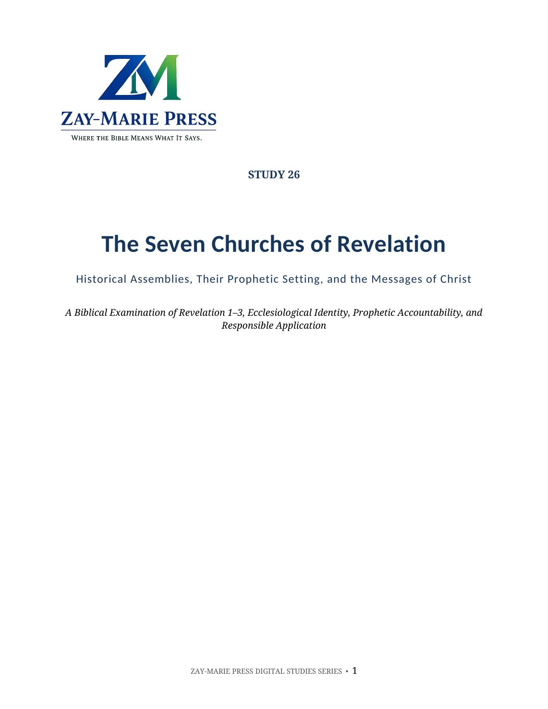
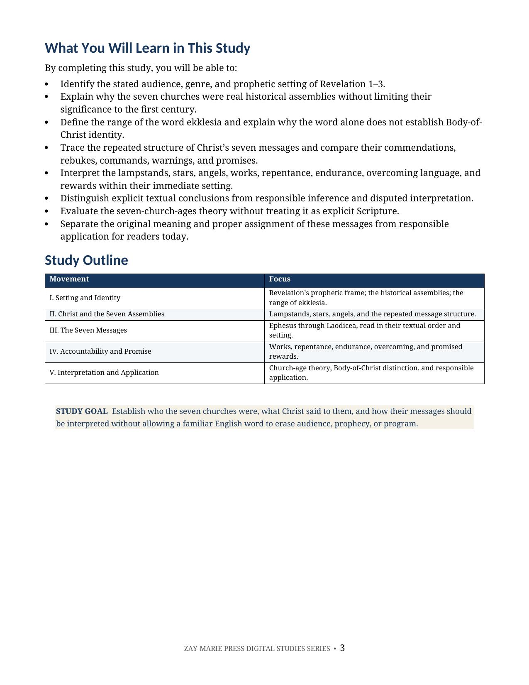
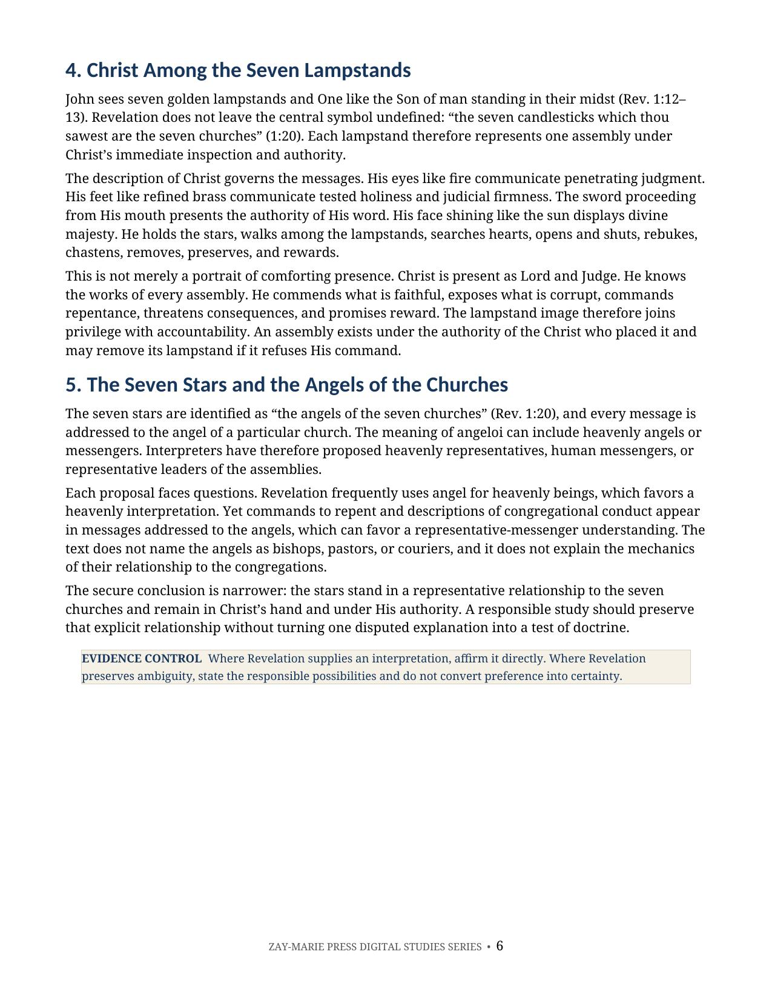
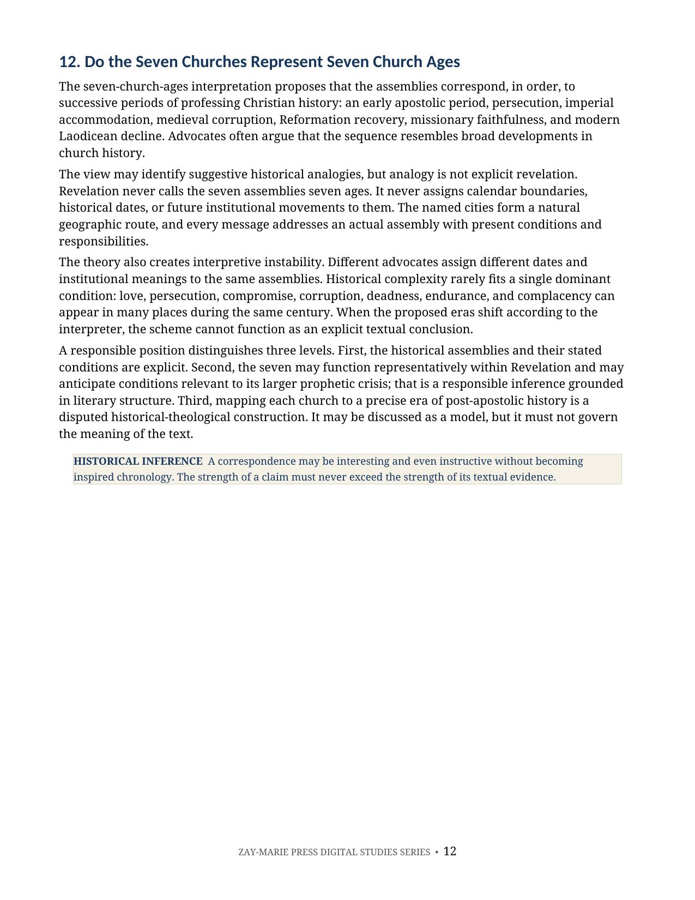
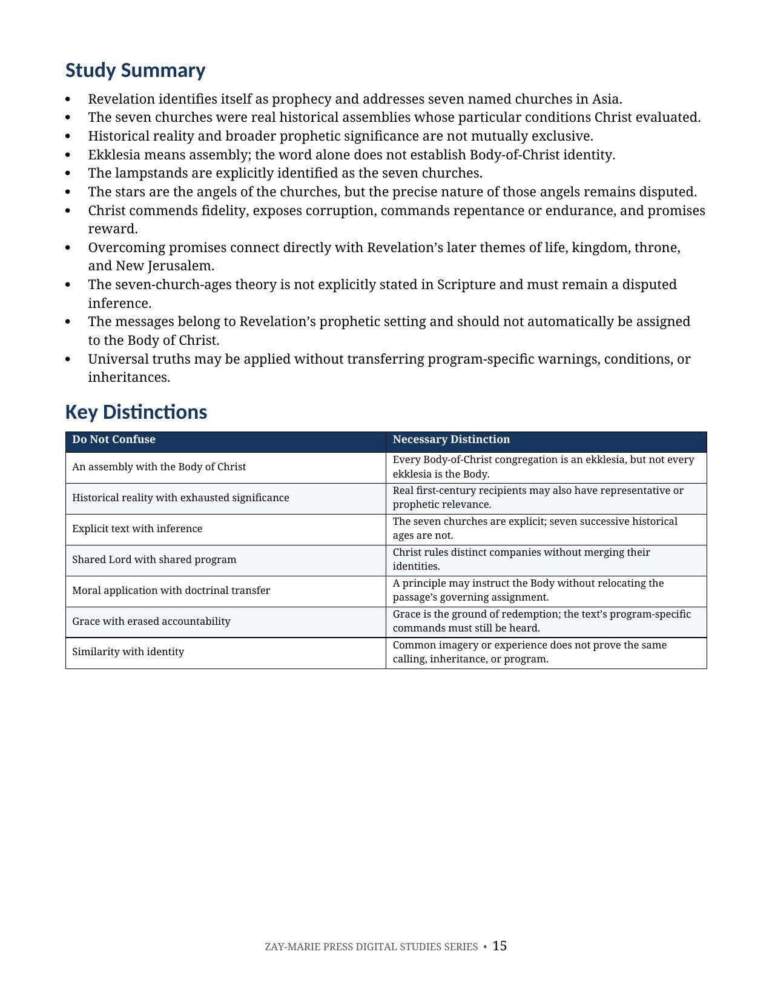

The Seven Churches of Revelation
Historical Assemblies, Their Prophetic Setting, and the Messages of Christ
A Biblical Examination of Revelation 1–3, Ecclesiological Identity, Prophetic Accountability, and Responsible Application
Revelation addresses seven real assemblies in Asia and places Christ among their lampstands as Lord and Judge. Their historical reality does not remove them from the prophetic setting of the book in which they appear.
This study interprets the lampstands, stars, angels, warnings, calls to repent or endure, overcoming language, and promised rewards before evaluating the seven-church-ages theory and the churches’ relationship to the Body of Christ.
Read the Seven Messages Within Revelation’s Own Setting
The word church identifies an assembly, but it does not by itself establish that assembly as the Church which is Christ’s Body. Audience, message, promise, setting, and revealed purpose must determine programmatic identity.
This study begins with Revelation’s stated audience and prophetic frame, examines each assembly and the repeated structure of Christ’s messages, and separates explicit textual conclusions from responsible inference and disputed interpretation.
How These Studies Relate
Study 26 interprets Revelation’s messages to seven named assemblies within their prophetic setting.
Study 23 — The 144,000 Follow the separately identified 144,000 in later Revelation passages; this keeps the seven assemblies and the sealed tribal company from being assumed to be the same audience.
Study 10 — Daniel’s Seventieth Week Check Daniel’s stated people and period before importing a prophetic timetable into the seven letters; the comparison disciplines claims about when those messages apply.
Identify the Assemblies Before Assigning Their Messages
Revelation’s Prophetic Setting
Identify the audience, genre, kingdom language, coming judgment, and prophetic markers supplied by Revelation itself.
Seven Historical Assemblies
Examine the named cities and the real conditions Christ commends, exposes, corrects, and judges.
Ekklesia and Identity
Learn why the Greek word for assembly does not independently establish Body-of-Christ identity.
Christ Among the Lampstands
Interpret the lampstands, stars, and angels within Christ’s authority over the seven assemblies.
Overcoming and Reward
Trace repentance, endurance, promised rewards, and their connections with Revelation’s later chapters.
The Church-Ages Theory
Evaluate the seven-age interpretation without presenting a disputed historical construction as explicit Scripture.
Trace the Messages Through Revelation
Revelation 1:1–11
Prophecy, named recipients, Christ’s coming, tribulation, kingdom, and the command to write.
Revelation 1:12–20
Christ among the lampstands and the inspired identification of the stars and lampstands.
Revelation 2:1–29
Ephesus, Smyrna, Pergamos, and Thyatira: commendation, rebuke, repentance, endurance, and promise.
Revelation 3:1–22
Sardis, Philadelphia, and Laodicea: watchfulness, preservation, correction, and inheritance.
Psalm 2:1–12
Messianic authority over the nations behind the promise in Revelation 2:26–27.
Isaiah 22:20–25
The key imagery Christ applies to His authority in Revelation 3:7.
Revelation 20–22
Reign, the second death, New Jerusalem, the tree of life, and promised inheritance.
Ephesians 1:15–23; 3:1–12
The Body’s identity and Mystery setting revealed through Paul for careful comparison.
Meaning Comes Before Assignment
“The word church identifies an assembly. It does not, by itself, identify that assembly as the Church which is Christ’s Body.”
Revelation’s audience markers, prophetic setting, warnings, rewards, and internal connections must govern the identity and assignment of the seven messages.
Preview the Study Before You Purchase
Click any page to enlarge it for reading.
{kind=link}

Learning Outcomes and Study Outline
Begin with measurable goals and a structured path through setting, identity, messages, promises, and application.
{kind=link}

Lampstands, Stars, and Angels
Separate Revelation’s explicit interpretations from questions the text leaves disputed.
{kind=link}

The Seven-Church-Ages Interpretation
Test the historical theory by the strength and limits of its textual evidence.
{kind=link}

Study Summary and Key Distinctions
Review the conclusions that preserve historical reality, prophetic setting, and programmatic identity.
A Focused Study Built for
Understanding and Teaching
Prophetic Setting
Read Revelation 1–3 within the genre, audience, kingdom, tribulation, and judgment markers supplied by the book.
Historical Assemblies
Examine all seven named churches and the specific conditions Christ addresses in each assembly.
Ekklesia Word Study
Distinguish the lexical meaning of assembly from the theological identity established by context and revelation.
Message Structure
Compare Christ’s self-identification, knowledge, evaluation, commands, warnings, calls to hear, and promises.
Overcomer Promises
Trace life, vindication, kingdom authority, throne, temple, and New Jerusalem themes through Revelation.
Evidence Categories
Separate explicit textual conclusions, responsible inferences, and disputed interpretations.
Programmatic Distinction
Compare Revelation’s prophetic markers with the Mystery identity of the Body revealed through Paul.
Teaching and Discussion Tools
Use the summary, key distinctions, Scripture tracing, review questions, teaching outline, and guided further study.
The Seven Churches of Revelation
Digital PDF · For personal use
Want More Than a Focused Study?
Digital Studies examine particular biblical subjects and difficult passages. The 40-lesson Biblical Hermeneutics course teaches a complete, repeatable method for establishing meaning in context, determining proper assignment, and making responsible application.